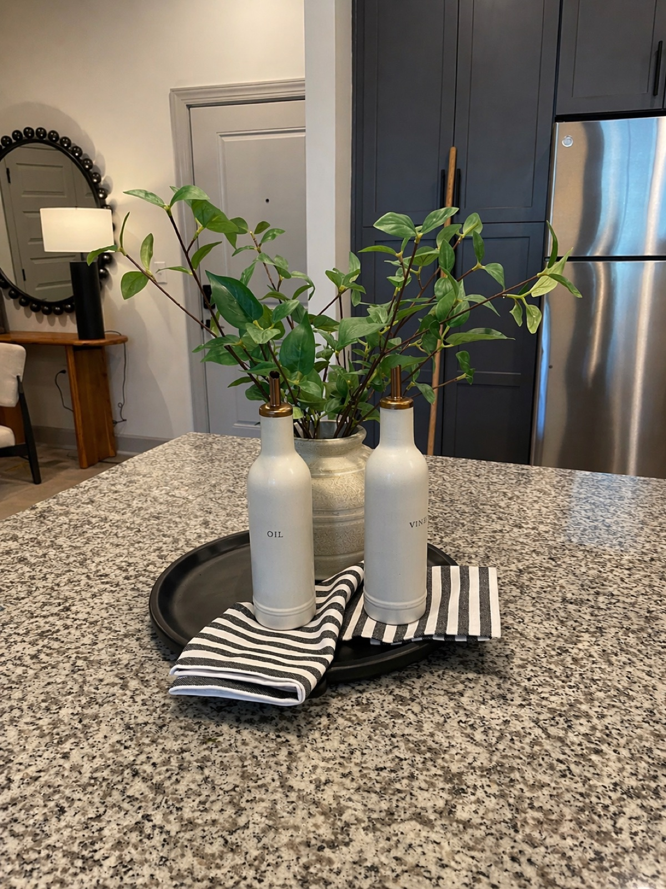
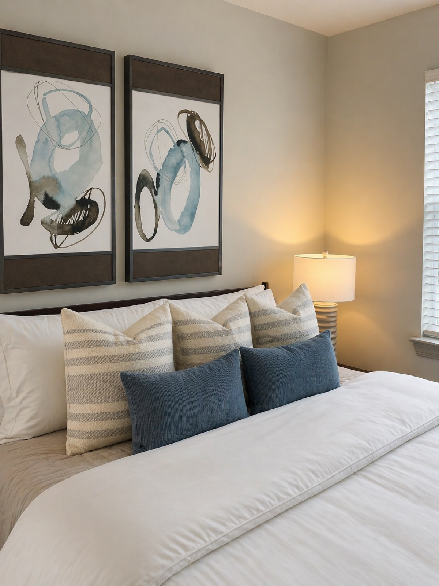
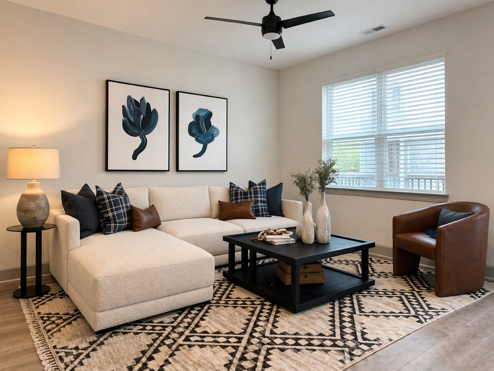
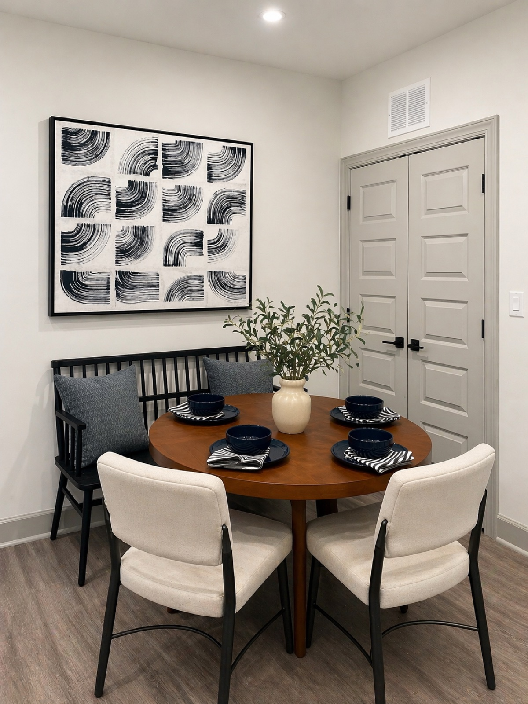
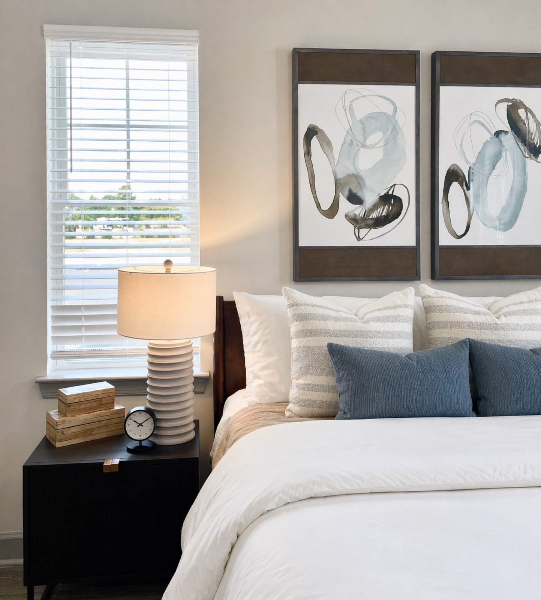

SC Multifamily Model is a dialogue between two sensibilities. It is a space that holds tension and resolution in equal measure, where opposing design languages find common ground in craft, materiality, and a shared commitment to beauty.
THE BRIEF
This dual-concept model required a design language elastic enough to serve two distinct lifestyle profiles while remaining visually coherent. The challenge was to create spaces that feel genuinely different in character yet unmistakably part of the same considered whole.


DESIGN DECISIONS
A restrained palette of cool stone, warm metal, and natural textiles forms the connective tissue between the two configurations. Where one scheme leans into graphic contrast and bold scale, the other employs softer layering and intimate proportion, yet both speak the same material language.
Bespoke millwork serves as the architectural spine of both units, providing storage, display, and spatial definition without the weight of permanent partitions, allowing each space to breathe and evolve.




ART & ATMOSPHERE
Art selection prioritized works that could anchor the tonal shift between the two configurations, with pieces with enough visual complexity to reward extended looking, yet resolved enough to coexist with strong architectural moves.